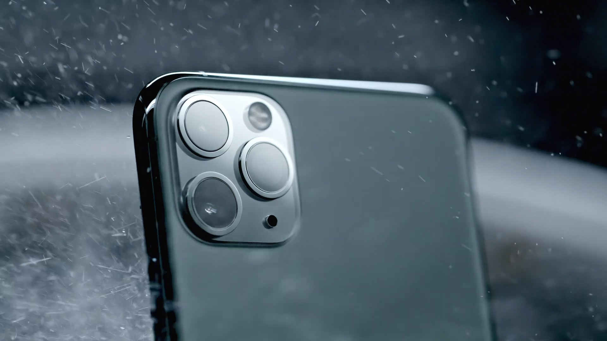

Компания по созданию стартапов
iPhone 12 Pro и iPhone 12 Pro Max. Новая эра. Процессор A14 Bionic далеко впереди других процессоров iPhone. Система камер Pro гораздо лучше работает при слабом освещении — а на iPhone 12 Pro Max ещё лучше. Ceramic Shield в четыре раза снижает риск повреждений дисплея при падении. Давайте посмотрим, как тут всё устроено. От 99 990 pyб. iPhone 12 Pro Max Дисплей Super Retina XDR 6,7 дюйма1 iPhone 12 Pro Дисплей Super Retina XDR 6,1 дюйма1 Сравните размеры с iPhone 11 Pro Как за каменным стеклом. Ceramic Shield радикально повышает прочность Подробнее Хирургическаянержавеющая сталь. Выигрывает всухую. Надёжная защита от воды (IP68)3 Четыре цветовых решения. «Тихоокеанский синий», золотой, серебристый и графитовый A14 Bionic Тотальное превосходство. A14 Bionic — первый процессор iPhone, созданный с применением 5‑нанометровой технологии. Его передовые компоненты по размеру сопоставимы с атомами.
Директор
Люблю создать технологочные продукты и выводить их на новые рынки
Дизайнер
Не мыслю своей жизни без дизайна, мне больно, когда я вижу что-то некрасивое
Директор по безопасности
Мимо меня и муха не проскочит, не то что хакер по WiFi подключится
Frontend разработчик
Обожаю front-end разработку и создавать продукты, которыми пользуются люди
100₽
в день
150₽
в день
200₽
в день
Адрес: Москва, Лесная улица, дом 4
Телефон: +7(654)734-76-19
Email: startup.new@gmail.com